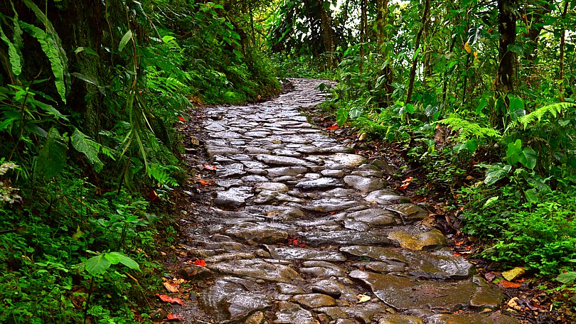
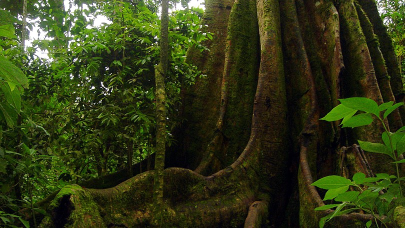

Características generales
El Parque Natural Chicaque se encuentra ubicado al suroccidente de la sabana de Bogotá, en la vertiente occidental de la cordillera oriental y conforma la Micro cuenca alta de la quebrada la playa, dentro de la cuenca media del Río Bogotá, entre las coordenadas geográficas 74°18’25.109” y 74°19’25.187” de Longitud oeste de greenwich y 4° 36’21.215” a 4°37’42.907” de Latitud Norte. Las coordenadas planas de Gauss datum Bogotá para el parque son de 1.000.761 a 1.003.271 m Norte y de 973.064 a 974.915 m este. El área comprende aproximadamente 308.88 hectáreas, dentro de la vereda de Chicaque, Municipio de San Antonio del Tequendama, colindando con los municipios de Soacha y Bojacá en el Departamento de Cundinamarca (Valenzuela, 1997).
Presenta un gradiente altitudinal que va desde los 2.000 m.s.n.m. (Escuela de Chicaque) hasta los 2.720 m.s.n.m. (cerros de carrizal, alto de armadillos) (Valenzuela, 1997) con una temperatura promedio de 14.5° Centígrados. Debido a la posición geográfica de la reserva, en el área se presenta el Efecto Föhen, con un bosque nublado frío húmedo en la vertiente de barloventos y un ambiente frío subxerofítico en la de sotavento (Valdés, 1996). La vegetación pertenece a la interfase entre la selva sub andina superior (entre los 2.000 y los 2.400 m.s.n.m.) y la selva andina inferior (entre los 2.400 y los 2.720 m.s.n.m.), según la clasificación propuesta por Cuatrecasas (1989), o entre el bosque húmedo subtropical (hasta los 2.100 m.s.n.m.) y el bosque húmedo montano bajo (a partir de los 2.100 y hasta los 2.720 m.s.n.m.), según la clasificación de Espinal y Montenegro (1963).
En el Parque Natural Chicaque se presenta un meso clima con variaciones debidas a la nubosidad y a la circulación atmosférica (Rivera y Córdoba, 1998). Se encuentra entre un enclave subxerofítico frío y una zona de clima templado húmedo, debido a su gradiente altitudinal (de 2.000 a 2.710 m.s.n.m.), se encuentra en una provincia climática fría húmeda (estación de Pedro Palo), colindando en su cota inferior con un clima Medio Húmedo (el reportado por la estación de la Mesa). Es necesario hacer aquí una importante salvedad. Por la posición topográfica que el área presenta, es habitual allí la permanencia de un cinturón de niebla, el cual puede aumentar considerablemente el exceso de agua mediante fenómenos de precipitación horizontal, disminución de la temperatura y por lo tanto de la evapotranspiración potencial, lo que cambiaría la provincia climática a un frío per húmedo (o frío muy húmedo), típico de los bosques de niebla montanos (Cavelier, 1991).
En el Parque Natural Chicaque los resultados de los cálculos de la temperatura, basándose en relaciones anteriores, son de 17.0 °C en la parte baja (2000 m.s.n.m.) y de 12.5 °C en la parte alta (2720 m.s.n.m.). La temperatura a 2360 m.s.n.m. es de 14.7°C, ligeramente superior a la temperatura del suelo calculada con las ecuaciones de flores. Estos cálculos concuerdan con las cifras reportadas por el HIMAT para estas altitudes (Cortes, 1989). En la estación la Mesa se registró una humedad relativa media anual del 74%, con una máxima anual de 73 % (media en 1993) y una mínima de 67% (registrada en 1992). Los meses más húmedos son Octubre y Noviembre, con medias de 79 y 80% respectivamente, en tanto que los meses menos húmedos son Septiembre y Agosto con Valores de 62 y 60%.
La Posición del Parque propicia la formación de densos núcleos de niebla, los cuales generan un meso clima local particular, aportando más humedad de la que es posible estimar a partir de los datos de esta estación. Se estima que la humedad del Parque fluctúa entre el 75 y el 85% (Rivera y Córdoba, 1998).
